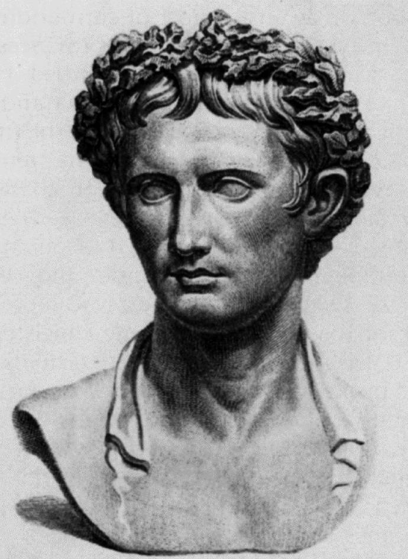
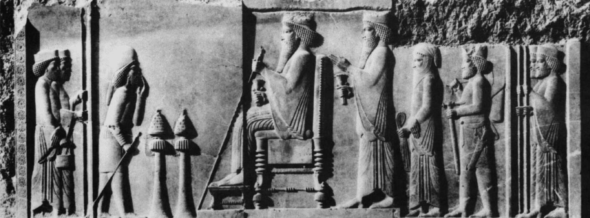
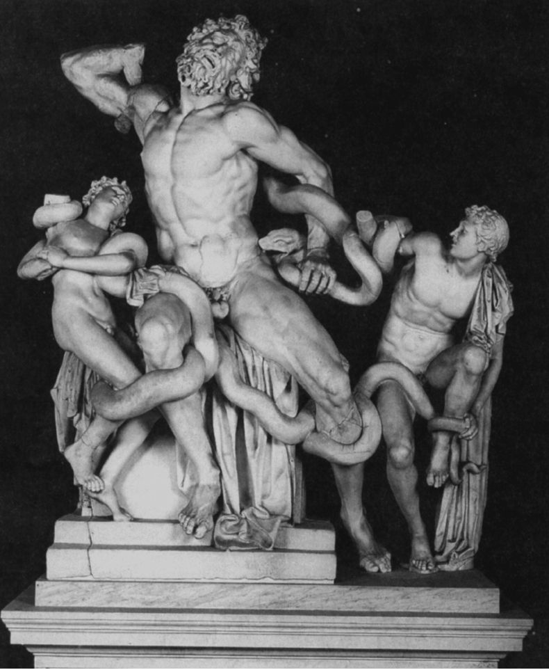

由于亚历山大大帝的征服，古典希腊文化普及到整个中东，形成一个新文明，希腊化时代一词就来源于此（见第四章第三节）。公元前336年，亚历山大继承其父亲腓力二世的王位后，首先严厉地镇压了底比斯的反抗，使其他希腊城邦只好默认他的统治；接着，于公元前334年，他率领马其顿士兵向东方的波斯人发动进攻。渡过赫勒斯滂海峡（今达达尼尔海峡）后，首先侵占小亚细亚，然后攻占叙利亚、埃及、美索不达米亚；公元前330年，占领大流士的国都波斯波利斯，征服整个波斯。第二年，征服者继续东进至兴都库什山和大夏，再从那里向印度进发，深入旁遮普。只是由于士兵们拒绝再前进，亚历山大才不得不从印度退回巴比伦，公元前323年他在那里患恶性疟疾病逝，终年33岁。

图42 马其顿国王亚历山大大帝的头像。
亚历山大病逝后，他的部将为争夺对庞大帝国的控制权而长期彼此征战；到公元前3世纪初，形成三个王国。一是马其顿王国，它回复原状，成为一个疆域不大、希腊化的民族王国，虽未能直接统治其南面的希腊诸城邦，但基本上控制了这些地区。另外一个是托勒密王朝统治下的埃及王国，它自然资源丰富，又有大海和沙漠作坚固的屏障，是三个王国中维持最久的一个。最后一个是塞琉西王朝统治下的王国，它由帝国的亚洲诸行省组成，是三个王国中疆域最广的一个。正因为这些王国拥有大量土地物产，它们只得跟周围许多敌人进行连续不断、难以取胜的战争。它们先把在印度的行省割让给印度国王旃陀罗笈多，接着又将小亚细亚割与凯尔特族入侵者，将波斯和美索不达米亚割与帕提亚人。最后，公元前1世纪，罗马征服了地中海沿岸旧帝国遗留下来的行省，征服了马其顿和埃及，从而结束了希腊化时代，开始了罗马时代。
虽然亚历山大的帝国是短暂的，但继其而起的诸王国却完整程度不等地生存了三个世纪，在这期间，中东也希腊化了。埃及和亚洲诸行省土地富饶，提供了种种前所未有的机会；成千上万的希腊商人、行政官员、教师、专门职业者和雇佣兵受这些机会的吸引，从各自的城邦移居那里。从而，为新的希腊化文明——一个实际上各方面都与其前身古典文明不同的混合创造物——奠定了基础。
城邦遭到破坏，日渐衰微，所以政治结构发生了根本的变化。希腊城邦为了生存下去，试行建立同盟。亚该亚同盟包括除斯巴达以外伯罗奔尼撒半岛的各城邦，埃托利亚同盟包括除雅典以外几乎整个希腊中部。虽然它们常被描绘成联邦组织，但实际上只是些中心权力机关没什么权力的同盟。它们过于软弱，建立得也太晚，使诸城邦在罗马军团到来之前，只能在邻近一个或另一个帝国的势力范围内活动。
就后起诸王国的城市来说，它们与古典时代的希腊城邦完全不同。它们内部由于希腊移民与土著民族间的差别而分裂。而且，它们总是完全从属于一个或另一个帝国。如果城市居民由于暴虐的国君——或者更坏，由于懦弱的国君——而遭难，城市也无能为力。实际决定不是由公民大会，而是在法庭或战场上做出的。因而，可以理解，城市居民都全力以赴地积聚财富，贪图享受，让贫民和奴隶自己设法谋生。于是，旧城邦的公民精神和社会内聚力为自私自利和阶级斗争所取代。

图43 这是波斯波利斯的国库中的一幅浮雕，描绘的是正在接受贡品的大流士一世。注意国王前面的香炉和进贡者表示敬意的姿势。大流士手持的权杖和荷花是他王权的象征。他的儿子和继承人薛西斯站在他的身后（公元前491——前486年）。
经济状况和经济制度也发生了根本变化。希腊本土不仅政治晦暗，而且经济衰落。过去，它依靠出口酒、油和各种制造品来换取海外殖民地的各种粮食和原材料。但是，到公元前4世纪时，这些殖民地已扎根下来，发展了自己的工业、葡萄园和橄榄园。
虽然希腊本土经济衰微，但许多希腊人却因移居此时向他们开放的中东而致富。他们以冒险精神和先进的商业、金融方法做出许多贡献。他们发现了波斯王朝积蓄的大量金银财宝，使之流通；采用或更广泛地使用诸如空吸式活塞泵、水车、螺丝钻子和水压机等技术发明。希腊人还掌握大规模的公共工程和国有企业，包括灌溉系统、矿山、采石场、盐田、“皇田”和制造华美织物和陶器的工场。结果，地区经济一体化发展，地区贸易和生产率获得相应增长。不过，收入的分配极为不当。虽然投机商利用收益的增长大发其财，但奴隶数目增加，自由劳动者的地位下降。总之，这是一个不仅生产率不断提高，而且经济不平等和社会冲突也日渐加剧的时期。
希腊化时代的普通人不仅在经济上，而且在心理上也受到了冲击。随着许许多多的人被逐出传统的环境，他们在新的大城市感到不知所措。过去，在旧城邦，生活比较简单。法律、道德、宗教和义务全有明确规定，为大家所普遍接受。而现在，所有这一切都消失了，城市居民发现自己处于一个无定形的世界之中。而且希腊化城市也常因种族、文化以及阶级的分裂而陷于四分五裂的境地。统治者采用诸如救世主和保护人之类的称号，努力培养个人效忠的神秘气氛。但是，这种手段并不能持久地解决问题。每个人都仍然面临着面对当时压倒一切的非人的力量该如何处世立身的问题。
知识分子的反应倾向于摆脱俗务，由理性转向神秘主义。这反映在当时颇为风行的传奇式的冒险活动和乌托邦的文学中。作者们所描绘的理想社会，不是希腊多石地面上的城邦，而是世界尽头五彩缤纷的仙境。这一时代的小说中，描写印度洋岛上乌托邦社会的小说特别受欢迎。这些乌托邦社会有幸享有能满足一切物质需要的天然财富，居住在岛上的人过着“简单而有节制的生活……没有妒忌和斗争”。这种逃避现实的倾向也反映在当时诸如犬儒主义、怀疑主义、享乐主义和禁欲主义之类的哲学中。这些哲学虽然有许多方面殊为不同，但通常关心的都是追求个人幸福，而不是社会福利。
如果说哲学是有教养的上流社会的宗教，那么下等社会的宗教则很不相同。下等社会信奉源自东方的宗教——密特拉教、诺斯替教、埃及的母亲神伊希斯和迦勒底人的星相宗教。所有这些宗教都允诺来世的救赎；都令人宽慰地保证天国的到来，以满足受苦大众的感情需要。因而，古典希腊的现世主义和理性主义此时让位于神秘主义和修来世。
考虑到哲学和宗教的这些反理性主义的趋向，会使人吃惊地注意到希腊化时代在科学方面取得的进步超过了17世纪以前任何别的时期。这部分地是由于亚历山大的征服提供了经济良机。大大扩展的市场激发人们改进技术，从而提高产量，增加收益。后起诸王国间以及它们与外部强国间连续不断的战争产生了对较复杂的武器的需要。希腊科学与中东科学（不仅包括美索不达米亚和埃及的科学，在一定程度上还包括印度科学）间的直接交流也同样起了促进的作用。最后，希腊化国家的马其顿统治者是在希腊学问享有盛誉的气氛中成长起来的，他们慷慨地支持科学研究。埃及的情况尤其如此。埃及的亚历山大图书博物馆实际是历史上最早由国家供养的研究院。它包括天文台、实验室、解剖室、植物园、动物园和一个藏书达50万册至70万册的图书馆。当时，还曾发生过早期“人才流失”的现象，整个地中海世界的哲学家、数学家、医生、植物学家、动物学家、天文学家、语言学家、地理学家、艺术家和诗人，由于受适意且激励人的气氛、极好的设备、免费的膳宿和令人羡慕的薪酬的吸引，纷纷来到埃及。

图44 这是一尊罗马人复制的希腊化时期的雕塑杰作——拉奥孔。据传说，拉奥孔是一名祭师，他曾警告特洛伊人不要将希腊人的木马运进城。这尊雕像描绘了他所受到的惩罚：护佑雅典人的女神雅典娜派来几条巨蟒，它们当着吓呆了的特洛伊人的面，吞食了拉奥孔和他的两个儿子。
在数学方面，欧几里得是以《几何原本》而闻名的最杰出的人物。在天文学方面，希帕恰斯发明了一直使用到近代的大部分仪器，并编制了最早的星座图表。托勒密根据希腊化时代的天文学知识编辑而成的书，一直是文艺复兴时期以前最有名的著作和权威的教科书。最有独到见解的是阿利斯塔克，他第一个了解到宇宙的宏大规模，认为居于宇宙之中心的是太阳而不是地球。他的观点，支持的人寥寥无几，被看作与日常经验相违，是邪恶的。因而，托勒密的“地心说”体系在整个中世纪时代仍为人们所普遍接受。天文学的进步促进了科学地理学的发展。主持亚历山大博物馆的埃拉托斯特尼计算出地球周长为2.47万英里；这距实际数值仅相差202英里，直到18世纪才得到订正。他还画了一张标明纬度的世界人口居住图，根据大西洋和印度洋潮水的涨落推断出诸海相连，欧洲、亚洲和非洲组成一个巨大的岛屿。
希腊化时代，科学的卓越贡献多半在医学和力学方面。博物馆鼓励人们从事解剖学研究，因而医生们此时首次了解到心脏在血液循环中的作用、脉搏的重要性、感觉神经和运动神经的功能以及大脑的脑回。这方面的知识，大都是通过百科全书式的伟大医学家盖伦传布开来；他的著作给人以深刻印象，以至于直到近代以前，医生们都不敢对他表示疑问，也不敢朝新的方向努力。力学方面的杰出人物是阿基米德，他是流体静力学即后用来检验金属纯度的浮体定律的创立者。他还发明了战争中用的精巧的机器，制定了螺旋、滑轮和杠杆原理；关于后者，据说他有一句豪言：“给我一个支点，我能撬动地球。”
总之，希腊化时代的历史意义在于：它打破了历史上形成的东、西方各自独立发展的模型，将它们合二为一。现在，人们首次想到把整个文明世界当作一个单位。起先，埃及人和马其顿人是以征服者和统治者的身份去东方的，他们强制推行希腊化模式。但是，在这一过程中，他们自己也发生了变化，使随后产生的希腊化文明成为一个混合物，而不是来自其他地区的移植物。最后，东方的宗教也传播到西方，大大地促进了罗马帝国和中世纪欧洲的转变。